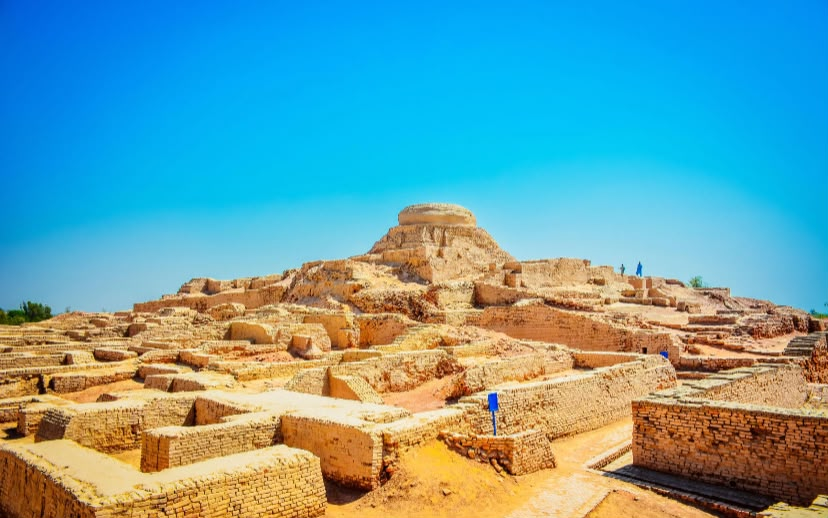

EXPLORE OUR LAND
Popular Destinations
Discover the places that make Sindh special.


OUR IDENTITY
Sindhi Culture
Discover Ajrak, Sindhi Topi, handicrafts, folk music and traditional art.
Explore Culture →TASTE OF SINDH
Traditional Food
Learn about Sindhi Biryani, Sai Bhaji and traditional Sindhi Kadhi.
Explore Food →OUR PURPOSE
Preserving Sindh's Heritage
Discover Sindh is an educational website that introduces visitors to the history, culture and beautiful places of Sindh, Pakistan.
Learn More →